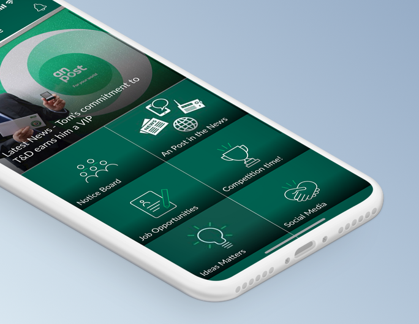
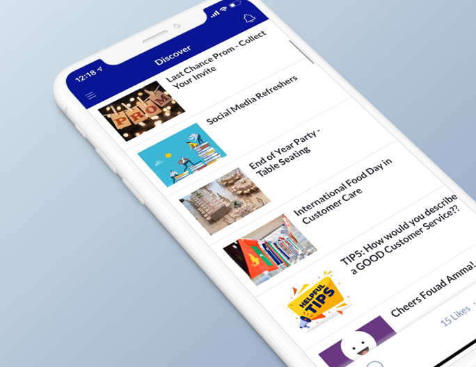
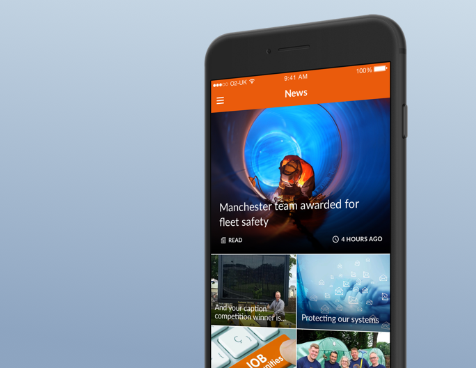
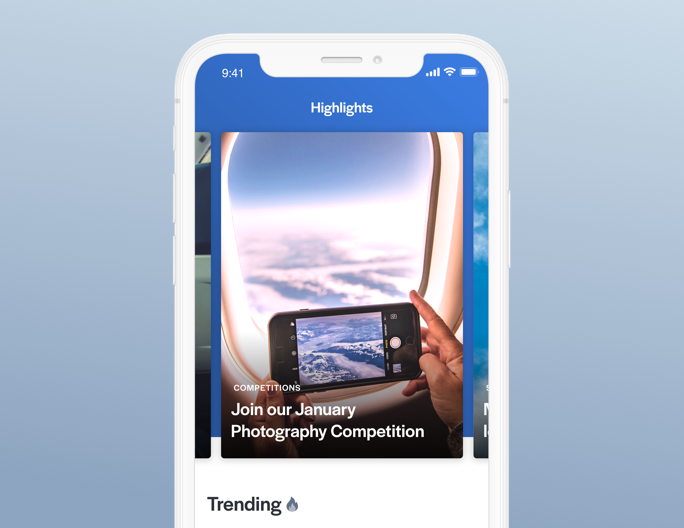
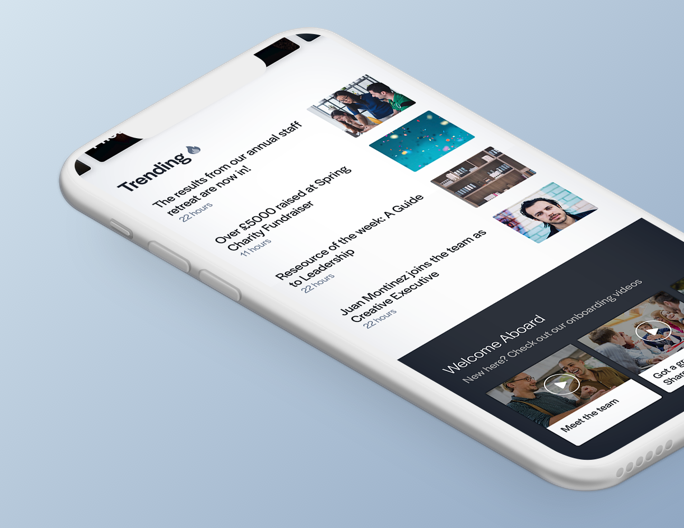
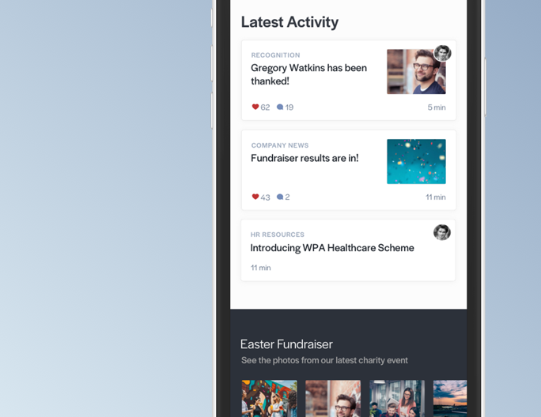

Thrive provides an employee communications platform that allows companies to connect with and engage their hard to reach, distributed workforce. The company's current mobile app designs have been in place for about 5 years, with only some components being refreshed over time.
With technology and design trends moving at a fast pace, we wanted to refresh the entire user interface in order to create a more vivid and interactive experience for end users. A plethora of new features have been built into the app over the years, so the new design would need to incorporate these in a way that makes most sense to its users, and be extensible to allow for more functionality to be added in the coming months and years.
High Level Goals
Before diving into the work, we first had to agree on our desired outcomes for the project and consider the restraints.
- Create a design that is both appealing to Thrive's buyers and easy for our diverse pool of users to use.
- Create a design that can be built by our engineer team in under 6 months. We have only 2 mobile developers, and other features to deliver this year, so to keep the project in scope we had to come up with a design that can be implemented bit by bit over 4-6 months.
- Increase the 28 Daily Active Users on our customer apps. This metric shows how "sticky" the app is, proving that the app is a necessary tool for employees or simply an app they like to use.
Myself and fellow UX Designer at Thrive, Lois Gordon, planning the redesign, or maybe just looking at memes.
My Role
As the Design Lead at Thrive (previously known as TheAppBuilder), I led the redesign project along with Product Owner Daniel Gore. Together we surveyed existing customer app data, interviewed a selection of our customers and carried out usability testing. I also carried out the visual design work, including the wireframing, user interface design and prototype creation.
Generative Research to Highlight Areas for Improvement
Using existing data from our customer apps, insights from our sales team and feedback fed back to our customer success team, we were able to build a picture of what is and isn't working in our current design, and what our customers would like to see in a future iteration of the Thrive mobile app.

Keep it Visual and Intuitive
We talked to our sales people within the team to find out why customers choose our platform over others - it primarily came down to the app's ease of use and its very visual design that features our customers' images at the forefront.
Make New Content Easily Discoverable
We discovered the customers with the best 28 DAU numbers had a couple of things in common - content was posted regularly and there was easy content discoverability. e.g. Their homepage was different every day, highlighting new or relevant content.


Incorporate More of our Customers' Branding
Customers can currently customise the colour of the title bars, buttons and onboarding screens, however prospects and customers want more control over the look of their apps and want to make their corporate branding more prominent.
Creating a Design Checklist from our Insights
After some sketches on paper, I created wireframes in Sketch, exploring different navigation styles and ways of displaying content.
I kept a checklist in my mind while wireframing:
- Make it easy for the app editors or admins within the company to make their app visually appealing with a range of list layouts that cater to different types of content
- Keep referring back to our user personas - could 58 year old, Warehouse Operative Tomas easily use this? Are the resources and content he wants to access easily findable?
- Incorporate more of the customer's branding so it can really feel like their own company product
Our personas that represent the various users of the Thrive platform
Redesigning the Core App Navigation
Our current mobile app uses a slide out menu accessed by tapping on the hamburger icon in the top left corner. While this style of navigation is still widely used, it has many drawbacks and I was keen to move away from it. Since the links to various areas of the app are hidden by default, this style of navigation doesn't lend itself well to content discoverability. As well as this, we were running into issues around having relevant, easily-accessible places to house links to new features.
In the new design, I developed new navigation patterns and incorporated the use of a traybar menu for accessing core areas of the app, including the main content menu, notifications and user profile and settings.
Wireframes showing the early exploration of UI ideas for the new Thrive mobile app
Enhanced Exploration
By incorporating both vertical and horizontal scrolling interactons within the main content menu, we think that users are much more likely to check out the vast range of content their app admins and editors publish into the app.
Better Usability
The hamburger icon in the top-left corner is a usability nightmare for many users, as we commonly use our devices one-handed. By replacing this with a bottom, traybar menu and swipeable lists, users can navigate through the app with ease.
Relevant, Purposeful Functionality
Titlebars could now be used to allow for extended functionality that's relevant to the screen, such as access to account settings in the profile section, notification preferences on the notifications screen, and sharing and bookmarking on general content screens.
Prominent Branding
Now with company logos being displayed proudly at the top of the homescreen, and their brand colours featuring in backgrounds and traybar icons, the app will feel far more customised to the organisation.
Versatile List Layouts
I redesigned the list layouts to make them each more "card-like" while still giving app editors a range of visual styles to select from, from large visual cards to show off imagery, to neat, compact cards catered for snappy headlines.
Early designs for Thrive’s mobile app showing the core structural changes and visual approach
Highlights Feed
A brand new feature I'd designed as part of the redesign project is what we call, the "Highlights Feed". This would present a range of content from various areas of the app, curated by the app editors, with the aim of highlight new, important or interesting content prominently to employees.

News Carousel
The feed included a large carousel to allow the organisation to bring specific pieces of content into focus, such as important announcements, new competitions for the staff and interesting stories from within the business.
Trending Content
A new area for "trending" content would show the posts with the most social engagement (likes and comments) that day. All newly updated or created posts would also be easily accessible as they create a feed-like feel to the highlights section.


Media Blocks
These blocks would feature images, videos or downloads that users could scroll horizontally through. App editors could use these blocks to highlight photos taken from a recent company event, show useful resources for onboarding new staff, or perhaps display videos illustrating how to carry out new health and safety procedures.
Time to validate assumptions
In order to mitigate the risk of such a large change to the app, we set out to get some user feedback. I created an interactive prototype of the redesigned app using Invision Studio and put it on an iPhone 7 ready for usability testing.
Along with two others from my team, I visited 3 of our customer organisations to conduct customer interviews and usability testing with their staff.
Video showing one of the prototypes we made for customer and user feedback using Invision Studio
Customer Interviews
First we spoke with team members responsible for the buying and management of the Thrive platform, walking them through our ideas and redesign concepts to find out if it fits their needs and wants.
Overall the feedback was very positive, with many cheerfully commenting on the increased visibility of the company brand in the user interface. We found customers were particularly excited by the Highlights Feed feature as many wished for a better way to call attention to certain content while still maintaining the integrity of their content structure. However they insisted that they didn't want it to, "feel like Facebook" so being able to curate the feed was important to them.
Testing with real users
We then met with 5 or 6 employees in each organisation to do usability testing with. Since Thrive users are people of all age ranges, job types and tech-savviness in all different types of businesses, our selection of usability testing partcipants needed to reflect this.
We spoke to Thrive app users in Ireland's largest postal service, An Post
Results & Recommendations
Overall the proposed redesign was positively received by the customers and users. Many users remarked on how it felt more like the other apps they frequently use now that the traybar navigation has been introduced. Below I've listed some of the observations I made from the usabiltiy testing session, and some of the changes I made to the prototypes to retest with new sets of users.
Provide a Familiar Content Structure
We found that some of the less tech-savvy users depended on the uniform content structure in their current company apps, so usability was affected negatively when we replaced this typical home screen with the new Highlights feed. By switching the order of these core areas to provide their “jump off points” in the form of homescreen tiles, usability of the app increased exponentially.
Make it look more swipey!
It took some users a significant amount of time to realise the lists of content in the main menu area could be swiped left and right to reveal other lists of content. In order to make it more obvious, we plan to include a "peaking animation" for when users first download the updated app to give users a little clue that the next list is just a swipe away.

Use Labels and More Recognisable Icons
Amending the icon from two people to a contact book dramatically increased the visibility and usage of the People Directory feature. We also found that some users were trepidatious about tapping on traybar icons as they weren't sure what to expect. By adding labels underneath these icons, users were more likely to explore without hesitation.
Show User Activity on Profile
When questioned as to where they would go to find posts they had made into a list, users often visited their profile expecting to see a historical lists of posts they'd publihed. I enhanced the profile by adding a section for "My Posts" and designed it in a way that is flexible enough to cater for future features, such as a user's bookmarks and to do lists.
Ship it
The user research we conducted instilled us with the confidence to push forward with the major redesign of the Thrive mobile app.
Working from with the developers at Thrive from the beginning of the design process, we were able to devise a development plan that should see the redesign being rolled out in chunks over 3 week sprints. The user interface changes are currently in development and we're continuing to track our customers' 28 Daily Active Users statistics, as well as our other core metrics, so we can measure the success of our complete app redesign.
Stay tuned for updates!